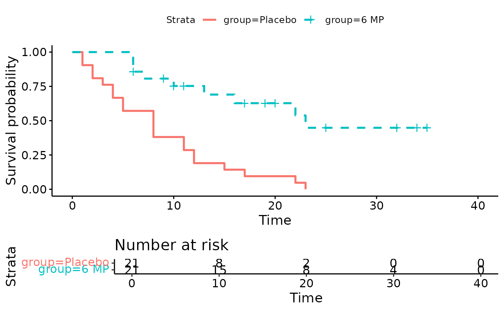
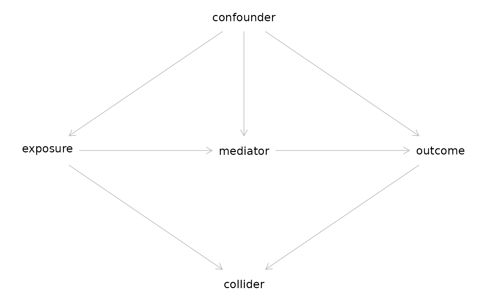

vignettes/session_lab.Rmd
session_lab.RmdLearning objectives
Exercises
leuk <- readr::read_csv("leuk.csv") %>% mutate(group = factor(group, levels = c("Placebo", "6 MP")))
##
## ── Column specification ────────────────────────────────────────────────────────
## cols(
## time = col_double(),
## cens = col_double(),
## group = col_character()
## )kmfit <- survival::survfit(Surv(time, cens) ~ group, data = leuk) survminer::ggsurvplot(kmfit, risk.table = TRUE, linetype=1:2)
## Warning: Vectorized input to `element_text()` is not officially supported.
## Results may be unexpected or may change in future versions of ggplot2.
coxfit <- coxph(Surv(time, cens) ~ group, data = leuk) expfit <- survreg(Surv(time, cens) ~ group, data = leuk, dist = "exponential") weibullfit <- survreg(Surv(time, cens) ~ group, data = leuk, dist = "weibull")
| Dependent variable: | |||
| time | |||
| Cox | exponential | Weibull | |
| prop. hazards | |||
| (1) | (2) | (3) | |
| group6 MP | -1.572*** | 1.527*** | 1.267*** |
| (0.412) | (0.398) | (0.311) | |
| Constant | 2.159*** | 2.248*** | |
| (0.218) | (0.166) | ||
| Observations | 42 | 42 | 42 |
| R2 | 0.322 | ||
| Max. Possible R2 | 0.988 | ||
| Log Likelihood | -85.008 | -108.524 | -106.579 |
| chi2 (df = 1) | 16.485*** | 19.652*** | |
| Wald Test | 14.530*** (df = 1) | ||
| LR Test | 16.352*** (df = 1) | ||
| Score (Logrank) Test | 17.247*** (df = 1) | ||
| Note: | p<0.1; p<0.05; p<0.01 | ||
Note, don’t compare likelihoods between Cox and AFT models.
?coxph
Create a simple test data set:
test1 <- data.frame(time=c(4,3,1,1,2,2,3), status=c(1,1,1,0,1,1,0), x=c(0,2,1,1,1,0,0), sex=c(0,0,0,0,1,1,1)) test1
## time status x sex
## 1 4 1 0 0
## 2 3 1 2 0
## 3 1 1 1 0
## 4 1 0 1 0
## 5 2 1 1 1
## 6 2 1 0 1
## 7 3 0 0 1Fit a model stratified by sex, with the time-dependent covariate x:
## Call:
## coxph(formula = Surv(time, status) ~ x + strata(sex), data = test1)
##
## coef exp(coef) se(coef) z p
## x 0.8023 2.2307 0.8224 0.976 0.329
##
## Likelihood ratio test=1.09 on 1 df, p=0.2971
## n= 7, number of events= 5library(dagitty) g <- dagitty(' dag { bb="-2,-3,3,3" collider [pos="0,1"] confounder [pos="0,-1"] exposure [exposure,pos="-1,0"] mediator [pos="0,0"] outcome [outcome,pos="1,0"] confounder -> exposure confounder -> outcome confounder -> mediator exposure -> collider exposure -> mediator mediator -> outcome outcome -> collider } ') plot(g)
